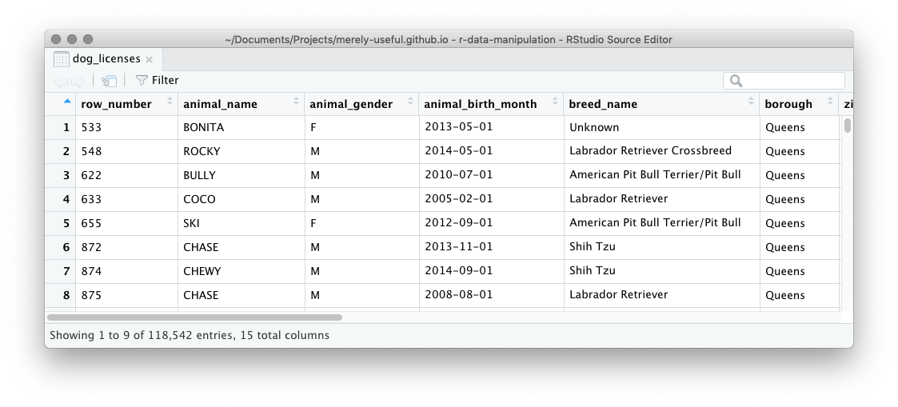

Chapter 7 Data Manipulation
7.1 Questions
- How can I read tabular data into a program?
- How can I select subsets of my data?
- How can I calculate new values?
- How can I tell what’s gone wrong in my programs?
- How can I operate on subsets of my data?
- How can I save my results?
7.2 Motivation
FIXME: where is data introduced?
FIXME: clean version with no missing values and snake case column names, including month and year columns for some (all?) of the date columns.
FIXME: I’m assuming that at some point this data will live in R package, so we can delay importing data to end of chapter.
The RStudio Viewer has an interface much like other spreadsheet programs you might have used. You can use this Viewer to look at the dog_licenses tibble with the View() function:

This viewer has some basic data manipulation features:
Arrange You can change the order of the rows in the data based on the values in a column by clicking the up/down arrow next to the column name.
Filter You can filter to include only rows which have a certain value in a column by first clicking the small funnel icon labelled “Filter”, then typing a desired value in the appropriate column.
Arrange and filter are known as data manipulation verbs. Individually, they describe a single simple manipulation of a dataset. It’s surprising how many questions you can answer using just these two basic verbs:
How old is the oldest dog in this data? To answer we can arrange the
animal_birth_monthcolumn in increasing order and see Jack, a Pug from Queens, was born in January 1999 (this license was issued in May 2015, making Jack at least 16 at the time). You’ll notice that there are other dogs with this same birthday.What range of license issue dates are in this data? Arrange
license_issued_dateonce in increasing order and once in decreasing order, to find the issue dates range from 12th September 2015 to 31st December 2016.How many dogs licenses belong to dogs named Fido? Filter the
animal_namecolumn withFido, and see “Showing … of 12 entries” - so 12!and many more…
While these verbs are powerful in their own right, their real power comes from combining them. For example, we can answer the more complicated question “Which dog named Fido is the oldest?” by first filtering then arranging.
The Viewer in RStudio, however, has two huge limitations:
It’s a point and click interface. This means to repeat the same operation again you need to remember exactly the steps of point, clicking and typing you performed to get to your answer. Consequently, it’s hard to share those steps unambiguously with someone else, and it’s hard to save your results for future.
The manipulation verbs in the viewer are limited. There is no way to rearrange the columns, add new variables or calculate summaries like counts or averages.
You’ll start this chapter by overcoming this first limitation. You won’t use the Viewer to arrange and filter, you’ll learn to write code to do the same operations. Then you’ll increase your vocabulary of data manipulation verbs to include:
- selecting variables,
- adding variables,
- summarizing rows, and
- performing these operations on subsets of the data.
Combining these verbs you’ll be able to answers questions like:
How long are licences issued for?
What are the most popular breeds?
What names are most popular for licensed dogs in New York? Does this very geographically?
When are dogs born?
FIXME: update these question to reflect things that are actually done in this and later chapters.
To master data manipulation you need to master two pieces:
How to describe the action you want with the data manipulation verbs individually. This is a language specific skill - in this chapter, you’ll use the functions in the dplyr package.
Identifying which verbs, and in which order to apply them, to answer a question of interest. This skill will translate across all technologies, but it takes a little longer to master.
7.2.1 Exercise: Point and click data manipulation
Using the RStudio Viewer answer the following questions:
- How many dog licenses belong to dogs named “Queen” that live in “Queens”?
7.3 Exploring data in the console
Let’s take a look at the data in the console:
## # A tibble: 118,542 x 15
## row_number animal_name animal_gender animal_birth_month breed_name
## <dbl> <chr> <chr> <dttm> <chr>
## 1 533 BONITA F 2013-05-01 00:00:00 Unknown
## 2 548 ROCKY M 2014-05-01 00:00:00 Labrador …
## 3 622 BULLY M 2010-07-01 00:00:00 American …
## 4 633 COCO M 2005-02-01 00:00:00 Labrador …
## 5 655 SKI F 2012-09-01 00:00:00 American …
## 6 872 CHASE M 2013-11-01 00:00:00 Shih Tzu
## 7 874 CHEWY M 2014-09-01 00:00:00 Shih Tzu
## 8 875 CHASE M 2008-08-01 00:00:00 Labrador …
## 9 893 MILEY F 2008-07-01 00:00:00 Boxer
## 10 919 KENZI F 2010-05-01 00:00:00 Schnauzer…
## # … with 118,532 more rows, and 10 more variables: borough <chr>,
## # zip_code <dbl>, community_district <dbl>, census_tract_2010 <dbl>,
## # neighborhood_tabulation_area <chr>, city_council_district <dbl>,
## # congressional_district <dbl>, state_senatorial_district <dbl>,
## # license_issued_date <date>, license_expired_date <date>Notice that in contrast to the Viewer you only see the first 10 rows of the dataset, and just the first few columns. The number of columns you see depends on the width of your console, so you may see more or fewer than displayed here. You should also note some of the contents of the columns have been abbreviated. The … at the end of some values in breed_name indicates these values have been truncated for display purposes.
You’ll be using the dplyr package for data manipulation. Since it is part of the tidyverse, you’ll need to load the tidyverse package to begin:
7.3.1 Re-arranging rows
You can reorder rows of data with the dplyr function arrange(). The arrange function takes a tibble as its first argument and column names as the remaining arguments. The result will have the rows ordered in increasing value of the specified column. For example, to find the licenses belonging to the oldest dogs we arrange dog_licenses using the animal_birth_month column:
## # A tibble: 118,542 x 15
## row_number animal_name animal_gender animal_birth_month breed_name
## <dbl> <chr> <chr> <dttm> <chr>
## 1 15568 JACK M 1999-01-01 00:00:00 Pug
## 2 23695 KATTY F 1999-01-01 00:00:00 Chihuahua
## 3 101309 TOMMY M 1999-01-01 00:00:00 Unknown
## 4 1598 SARAH F 1999-01-01 00:00:00 West High…
## 5 8628 DOMINO M 1999-01-01 00:00:00 Labrador …
## 6 15733 BRINKS M 1999-01-01 00:00:00 Yorkshire…
## 7 30419 LUCKY M 1999-01-01 00:00:00 Unknown
## 8 31348 MAGGIE F 1999-01-01 00:00:00 German Sh…
## 9 34685 COOKIE M 1999-01-01 00:00:00 Pomeranian
## 10 37194 DARCY F 1999-01-01 00:00:00 Cocker Sp…
## # … with 118,532 more rows, and 10 more variables: borough <chr>,
## # zip_code <dbl>, community_district <dbl>, census_tract_2010 <dbl>,
## # neighborhood_tabulation_area <chr>, city_council_district <dbl>,
## # congressional_district <dbl>, state_senatorial_district <dbl>,
## # license_issued_date <date>, license_expired_date <date>You’ll see Jack the Pug that lives in Queens, just like you did in the Viewer.
To arrange the rows by decreasing value, you need to wrap the column name in desc() (short for descending order). For instance to find the youngest dogs:
## # A tibble: 118,542 x 15
## row_number animal_name animal_gender animal_birth_month breed_name
## <dbl> <chr> <chr> <dttm> <chr>
## 1 120352 MARLEY M 2016-12-01 00:00:00 Cocker Sp…
## 2 121981 MR. M 2016-12-01 00:00:00 Chihuahua…
## 3 120501 RORY M 2016-12-01 00:00:00 Unknown
## 4 122028 TAQUITO M 2016-12-01 00:00:00 Papillon
## 5 115820 REX M 2016-11-01 00:00:00 Maltese
## 6 121727 CHANDERBAL… M 2016-11-01 00:00:00 Havanese
## 7 115777 ANGEL F 2016-11-01 00:00:00 Poodle, M…
## 8 118175 MASON M 2016-11-01 00:00:00 American …
## 9 121601 TEDDY M 2016-11-01 00:00:00 Havanese
## 10 120995 LOLA F 2016-11-01 00:00:00 Morkie
## # … with 118,532 more rows, and 10 more variables: borough <chr>,
## # zip_code <dbl>, community_district <dbl>, census_tract_2010 <dbl>,
## # neighborhood_tabulation_area <chr>, city_council_district <dbl>,
## # congressional_district <dbl>, state_senatorial_district <dbl>,
## # license_issued_date <date>, license_expired_date <date>As another example, to find the earliest issue date we can order by increasing license_issued_date:
## # A tibble: 118,542 x 15
## row_number animal_name animal_gender animal_birth_month breed_name
## <dbl> <chr> <chr> <dttm> <chr>
## 1 1 QUEEN F 2013-04-01 00:00:00 Akita Cro…
## 2 2 CHEWBACCA F 2012-06-01 00:00:00 Labrador …
## 3 3 IAN M 2006-01-01 00:00:00 Unknown
## 4 7 LOLA F 2009-06-01 00:00:00 Maltese
## 5 4 PAIGE F 2014-07-01 00:00:00 American …
## 6 5 BUDDY M 2008-04-01 00:00:00 Unknown
## 7 8 YOGI M 2010-09-01 00:00:00 Boxer
## 8 10 MUNECA F 2013-05-01 00:00:00 Beagle
## 9 27 BESS F 2010-09-01 00:00:00 Beagle
## 10 26 BIGS M 2004-12-01 00:00:00 American …
## # … with 118,532 more rows, and 10 more variables: borough <chr>,
## # zip_code <dbl>, community_district <dbl>, census_tract_2010 <dbl>,
## # neighborhood_tabulation_area <chr>, city_council_district <dbl>,
## # congressional_district <dbl>, state_senatorial_district <dbl>,
## # license_issued_date <date>, license_expired_date <date>The first row is the record with the earliest issue date, but we can’t actually see that date because the column license_issued_date isn’t being displayed due to space. One solution is to extract only the columns we are interested in, a manipulation known as selecting columns.
7.3.2 Exercise: Arranging character strings
Use arrange() to order the dog licenses by animal_name in increasing order. What does this tell you about the way R treats punctuation and numbers when dealing with alphabetical order?
7.4 How can I select subsets of my data?
Two verbs are used to subset data:
select()to select columnsfilter()to select rows
You’ll learn about these two functions in this section, along with learning about a way to chain together multiple operations on a dataset.
7.4.1 Selecting columns
The select() function in dplyr is used to extract some subset of columns (but keep all the rows) from a tibble. Just like arrange(), it takes a tibble as its first argument and column names as the remaining arguments. For example, to keep only the animal_name column:
## # A tibble: 118,542 x 1
## animal_name
## <chr>
## 1 BONITA
## 2 ROCKY
## 3 BULLY
## 4 COCO
## 5 SKI
## 6 CHASE
## 7 CHEWY
## 8 CHASE
## 9 MILEY
## 10 KENZI
## # … with 118,532 more rowsYou can provide additional column names as arguments to keep additional specified columns, for example to keep animal_name and breed_name:
## # A tibble: 118,542 x 2
## animal_name breed_name
## <chr> <chr>
## 1 BONITA Unknown
## 2 ROCKY Labrador Retriever Crossbreed
## 3 BULLY American Pit Bull Terrier/Pit Bull
## 4 COCO Labrador Retriever
## 5 SKI American Pit Bull Terrier/Pit Bull
## 6 CHASE Shih Tzu
## 7 CHEWY Shih Tzu
## 8 CHASE Labrador Retriever
## 9 MILEY Boxer
## 10 KENZI Schnauzer, Miniature
## # … with 118,532 more rowsTo return to finding the earliest issue date, you need to first arrange by increasing license_issued_date and then select the license_issued_date column. One approach is to store the result of the arrange step,
Then apply the select step to this object:
## # A tibble: 118,542 x 1
## license_issued_date
## <date>
## 1 2014-09-12
## 2 2014-09-12
## 3 2014-09-12
## 4 2014-09-12
## 5 2014-09-12
## 6 2014-09-12
## 7 2014-09-12
## 8 2014-09-13
## 9 2014-09-13
## 10 2014-09-13
## # … with 118,532 more rowsThere are lots of shortcuts you can use with select() to avoid having to type out all the variables you want to keep. For example, you can ask for all the columns that start with a certain string:
## # A tibble: 118,542 x 3
## animal_name animal_gender animal_birth_month
## <chr> <chr> <dttm>
## 1 BONITA F 2013-05-01 00:00:00
## 2 ROCKY M 2014-05-01 00:00:00
## 3 BULLY M 2010-07-01 00:00:00
## 4 COCO M 2005-02-01 00:00:00
## 5 SKI F 2012-09-01 00:00:00
## 6 CHASE M 2013-11-01 00:00:00
## 7 CHEWY M 2014-09-01 00:00:00
## 8 CHASE M 2008-08-01 00:00:00
## 9 MILEY F 2008-07-01 00:00:00
## 10 KENZI F 2010-05-01 00:00:00
## # … with 118,532 more rowsTake a look in the “Useful functions” section of the select() help page for a complete list:
7.4.2 Exercise: Find the latest license issue date
Combine arrange() and select() to confirm the last issue date in this dataset is 31st December 2016.
7.4.3 Combining operations with the pipe %>%
You’ve seen you can combine data manipulation steps to do more complicated tasks, but so far you’ve done so by saving an intermediate object, in our previous example the object dog_by_date:
The pipe, %>%, is an operator that allows you to chain together operations without intermediate objects and maintain readability. The name, “pipe”, comes from the plumbing kind of pipe, not the smoking kind, and references the idea of objects flowing out of one function and into another. Let’s just look at the first step in our manipulation:
With the pipe this can be rewritten as:
The pipe takes the object on the left hand side and passes it as the first argument to the function on the right hand side. So, here the dog_licenses dataset is passed to the first argument of arrange(). Inside arrange() we can then list any additional arguments as we normally would.
The pipe works very nicely with the data manipulation verbs because every verb expects a tibble as its first argument and returns a tibble. This means the result of one operation is easily piped into the next operation, allowing you to chain together multiple steps. For instance, piping the result of the arrange step above into the select() function:
When you see the pipe, read it as “and then”. So, the above code would be read:
Take the dog_licenses data, and then arrange the rows by the
license_issued_date, and then select the columnlicense_issued_date.
The result is code that matches very closely how we might describe the steps we performed in natural language. It’s so natural that for the remainder of the chapter we’ll use the pipe when combining data manipulation steps.
7.4.4 Exercise: Reading aloud
Read the following code aloud to your neighbor (or cat, dog, or rubber duck). Remember to pronounce %>% as “and then”.
What question might it answer?
7.4.5 Exercise: Using the pipe
Re-write this snippet of code to use the pipe:
Use the pipe to re-write this snippet of code to avoid the intermediate variable:
7.4.6 Filtering to keep a subset of rows
The function to filter rows of a tibble is filter(). Like arrange() and select(), its first argument is a tibble. The remaining arguments describe which rows to keep. The rows to keep are specified with a logical expression - something that is either TRUE or FALSE. The rows where this expression is TRUE will be returned.
One of the simplest kinds of logical expression is a test for equality with the == operator. For example, to keep the rows where animal_name is BRUNO you could do:
## # A tibble: 272 x 15
## row_number animal_name animal_gender animal_birth_month breed_name
## <dbl> <chr> <chr> <dttm> <chr>
## 1 12001 BRUNO M 2010-05-01 00:00:00 American …
## 2 27228 BRUNO M 2013-07-01 00:00:00 Jack Russ…
## 3 68192 BRUNO M 2002-01-01 00:00:00 Shih Tzu
## 4 70175 BRUNO M 2015-12-01 00:00:00 Chihuahua…
## 5 120562 BRUNO M 2016-05-01 00:00:00 Labrador …
## 6 3915 BRUNO M 2014-03-01 00:00:00 Doberman …
## 7 9614 BRUNO M 2014-12-01 00:00:00 Boxer
## 8 15606 BRUNO M 2015-02-01 00:00:00 French Bu…
## 9 32742 BRUNO M 2014-03-01 00:00:00 Maltipoo
## 10 34299 BRUNO M 2003-01-01 00:00:00 Unknown
## # … with 262 more rows, and 10 more variables: borough <chr>,
## # zip_code <dbl>, community_district <dbl>, census_tract_2010 <dbl>,
## # neighborhood_tabulation_area <chr>, city_council_district <dbl>,
## # congressional_district <dbl>, state_senatorial_district <dbl>,
## # license_issued_date <date>, license_expired_date <date>You could read this code aloud as:
Take the dog_licenses data, and then filter for only rows when
animal_nameis equal to “BRUNO”
The logical expression, animal_name == "BRUNO", will be TRUE when the value of the animal_name column is exactly equal to the character string "BRUNO" - any differences in characters, case, or whitespace will result in FALSE.
Above, each value within a column was compared against the same fixed string ("BRUNO"). You can also compare the values from two columns against each other by including a column name on each side of the == sign. In programming terms this is known as element-wise comparison. For example, license_issued_date == animal_birth_month will return TRUE for a row only if for that row the date the license was issued is the exact same date as the birth month for the dog. If you take a look:
## # A tibble: 0 x 15
## # … with 15 variables: row_number <dbl>, animal_name <chr>,
## # animal_gender <chr>, animal_birth_month <dttm>, breed_name <chr>,
## # borough <chr>, zip_code <dbl>, community_district <dbl>,
## # census_tract_2010 <dbl>, neighborhood_tabulation_area <chr>,
## # city_council_district <dbl>, congressional_district <dbl>,
## # state_senatorial_district <dbl>, license_issued_date <date>,
## # license_expired_date <date>There is no output (apart from the column names), which means that no rows satisfy this criteria.
Remember that a string is surrounded by quotes while a column name is not. When you are reading code, look for the quotes to figure out if the comparison is to a string, or (by the absence of quotes) to the strings within a column. Use the same strategy to figure out where the quotes should be in your own code, but beware: misplacing quotes often won’t result in an error, but instead a result that you weren’t expecting. For example, I might be interested in the licenses issued to male dogs and try:
## # A tibble: 0 x 15
## # … with 15 variables: row_number <dbl>, animal_name <chr>,
## # animal_gender <chr>, animal_birth_month <dttm>, breed_name <chr>,
## # borough <chr>, zip_code <dbl>, community_district <dbl>,
## # census_tract_2010 <dbl>, neighborhood_tabulation_area <chr>,
## # city_council_district <dbl>, congressional_district <dbl>,
## # state_senatorial_district <dbl>, license_issued_date <date>,
## # license_expired_date <date>The result has zero rows, which would suggest there are no such licenses, but in fact this is the answer to a different question. Can you see what is wrong with the code? By surrounding animal_gender in quotes, R has interpreted the comparison as: is the string "animal_gender" equal to the string "M"?. The answer is FALSE, and no rows are returned. I actually wanted to compare the animal_gender column to the string "M", so animal_gender should have no quotes around it:
## # A tibble: 64,770 x 15
## row_number animal_name animal_gender animal_birth_month breed_name
## <dbl> <chr> <chr> <dttm> <chr>
## 1 548 ROCKY M 2014-05-01 00:00:00 Labrador …
## 2 622 BULLY M 2010-07-01 00:00:00 American …
## 3 633 COCO M 2005-02-01 00:00:00 Labrador …
## 4 872 CHASE M 2013-11-01 00:00:00 Shih Tzu
## 5 874 CHEWY M 2014-09-01 00:00:00 Shih Tzu
## 6 875 CHASE M 2008-08-01 00:00:00 Labrador …
## 7 976 APOLLO M 2014-10-01 00:00:00 American …
## 8 1297 JERRY M 2009-06-01 00:00:00 Labrador …
## 9 2133 SIMON M 2010-12-01 00:00:00 Havanese
## 10 2289 BUDDY M 2012-06-01 00:00:00 Labrador …
## # … with 64,760 more rows, and 10 more variables: borough <chr>,
## # zip_code <dbl>, community_district <dbl>, census_tract_2010 <dbl>,
## # neighborhood_tabulation_area <chr>, city_council_district <dbl>,
## # congressional_district <dbl>, state_senatorial_district <dbl>,
## # license_issued_date <date>, license_expired_date <date>The operator, == (you can read as “is equal to”, or simply “equals”), is a specific kind of comparison. Other comparisons include:
| Operator | Meaning |
|---|---|
< |
less than |
> |
greater than |
<= |
less than or equal to |
>= |
greater than or equal to |
!= |
not equal to |
7.4.7 Exercise: Enterprising dogs
Are there any dogs called “Spock”, “Picard”, or “Janeway”?
These are Star Trek characters, can you find any dogs with a name from one of your favorite books, TV shows, or movies?
7.4.8 Exercise: Expired Licenses
This code creates a variable that contains the date for the start of the year 2016:
Use filter() with this variable to find:
- The dog licenses that were issued before 2016
- The dog licenses that expire before 2016
7.4.9 More complicated expressions
Logical expressions can be combined with logical operators to construct more complicated expressions. For example, the AND operator, &, returns TRUE only if the expressions on both sides of it are TRUE. For example, you’ve seen, you can find the licenses to dogs called "BRUNO":
## # A tibble: 272 x 15
## row_number animal_name animal_gender animal_birth_month breed_name
## <dbl> <chr> <chr> <dttm> <chr>
## 1 12001 BRUNO M 2010-05-01 00:00:00 American …
## 2 27228 BRUNO M 2013-07-01 00:00:00 Jack Russ…
## 3 68192 BRUNO M 2002-01-01 00:00:00 Shih Tzu
## 4 70175 BRUNO M 2015-12-01 00:00:00 Chihuahua…
## 5 120562 BRUNO M 2016-05-01 00:00:00 Labrador …
## 6 3915 BRUNO M 2014-03-01 00:00:00 Doberman …
## 7 9614 BRUNO M 2014-12-01 00:00:00 Boxer
## 8 15606 BRUNO M 2015-02-01 00:00:00 French Bu…
## 9 32742 BRUNO M 2014-03-01 00:00:00 Maltipoo
## 10 34299 BRUNO M 2003-01-01 00:00:00 Unknown
## # … with 262 more rows, and 10 more variables: borough <chr>,
## # zip_code <dbl>, community_district <dbl>, census_tract_2010 <dbl>,
## # neighborhood_tabulation_area <chr>, city_council_district <dbl>,
## # congressional_district <dbl>, state_senatorial_district <dbl>,
## # license_issued_date <date>, license_expired_date <date>And you could find the dog licenses issued to dogs that live in Brooklyn:
## # A tibble: 29,334 x 15
## row_number animal_name animal_gender animal_birth_month breed_name
## <dbl> <chr> <chr> <dttm> <chr>
## 1 2895 FUDGE M 2014-07-01 00:00:00 American …
## 2 4057 STAR F 2011-01-01 00:00:00 Poodle
## 3 74463 MUNECA F 2011-09-01 00:00:00 Chihuahua…
## 4 76232 KATTY F 2002-06-01 00:00:00 Chihuahua
## 5 85113 SHADOW M 2015-03-01 00:00:00 American …
## 6 85997 SPARKIE M 2013-08-01 00:00:00 Maltese C…
## 7 92451 SNOW M 2014-07-01 00:00:00 Maltese
## 8 104256 BELLA F 2016-07-01 00:00:00 Maltese
## 9 10389 SPARKLE F 2006-01-01 00:00:00 Schnauzer…
## 10 82492 UNKNOWN F 2015-11-01 00:00:00 Pomeranian
## # … with 29,324 more rows, and 10 more variables: borough <chr>,
## # zip_code <dbl>, community_district <dbl>, census_tract_2010 <dbl>,
## # neighborhood_tabulation_area <chr>, city_council_district <dbl>,
## # congressional_district <dbl>, state_senatorial_district <dbl>,
## # license_issued_date <date>, license_expired_date <date>If you want to find the licenses that are to dogs named Bruno in Brooklyn, you could combine the two logical statements with &:
## # A tibble: 55 x 15
## row_number animal_name animal_gender animal_birth_month breed_name
## <dbl> <chr> <chr> <dttm> <chr>
## 1 8496 BRUNO M 2005-04-01 00:00:00 American …
## 2 65466 BRUNO M 2012-11-01 00:00:00 Golden Re…
## 3 115999 BRUNO M 2009-01-01 00:00:00 Pug
## 4 118963 BRUNO M 2005-01-01 00:00:00 Unknown
## 5 10505 BRUNO M 2006-04-01 00:00:00 Bull Dog,…
## 6 14444 BRUNO M 2007-01-01 00:00:00 Cocker Sp…
## 7 14690 BRUNO M 2014-04-01 00:00:00 Shih Tzu
## 8 47454 BRUNO M 2011-06-01 00:00:00 Pug
## 9 58918 BRUNO M 2006-04-01 00:00:00 Bull Dog,…
## 10 105964 BRUNO M 2016-04-01 00:00:00 Bull Dog,…
## # … with 45 more rows, and 10 more variables: borough <chr>,
## # zip_code <dbl>, community_district <dbl>, census_tract_2010 <dbl>,
## # neighborhood_tabulation_area <chr>, city_council_district <dbl>,
## # congressional_district <dbl>, state_senatorial_district <dbl>,
## # license_issued_date <date>, license_expired_date <date>The parentheses around each logical expression are optional, but can help visually to group the components to &, especially if those logical expressions get more complicated.
If you want to create an “or” type expression, like “licenses to dogs named BRUNO or dogs named BRUCE”, you need to combine two comparisons with the OR operator, |.
If you find yourself combining lots of comparisons on the same column with |, like dogs named BRUNO, BRUCE or BRADY:
dog_licenses %>%
filter((animal_name == "BRUNO") | (animal_name == "BRUCE") | (animal_name == "BRADY"))You can save a lot of typing with %in%:
On the right hand side of %in% the function c(), combines many single values into a vector. %in% will return TRUE for an element of the left hand side if it is contained in the vector on the right hand side.
7.4.10 Exercise: Expired Licenses
This code creates two variables that contain the dates for the start and end of the year 2016:
Use filter() with these variables to find the dog licenses that expire during 2016.
7.5 How can I calculate new values?
So far, you’ve been manipulating the columns that already exist in a dataset, but what if you want to add new ones? The function mutate() handles this kind of operation.
To see how this works let’s start with a logical expression: animal_name == "CHASE". If you used this with filter(), you would get all the rows back where the license was issued to a dog named CHASE. Let’s say instead of subsetting the data, you want to add a column called called_chase that contained the TRUE and FALSE result. You might do this for example, if you are interested in comparing the two groups of dogs, rather than just keeping one of them. With mutate() after passing in the data, you pass named arguments, where the name is the name you desire for the new column, and its value is the way to calculate it:
dog_licenses %>%
mutate(called_chase = animal_name == "CHASE") %>%
select(animal_name, called_chase)## # A tibble: 118,542 x 2
## animal_name called_chase
## <chr> <lgl>
## 1 BONITA FALSE
## 2 ROCKY FALSE
## 3 BULLY FALSE
## 4 COCO FALSE
## 5 SKI FALSE
## 6 CHASE TRUE
## 7 CHEWY FALSE
## 8 CHASE TRUE
## 9 MILEY FALSE
## 10 KENZI FALSE
## # … with 118,532 more rowsTake
dog_licences, and then, mutate to add a column calledcalled_chasewhich is the result of testing whetheranimal_nameis exactly"CHASE", and then, select the columnsanimal_nameandcalled_chase.
The select statement isn’t crucial to the calculation here, but it does help me draw your attention to the columns that were involved in this step.
This can be a useful intermediate step in filtering, since it gives you a chance to examine the logical statement before using it to filter:
## # A tibble: 126 x 16
## row_number animal_name animal_gender animal_birth_month breed_name
## <dbl> <chr> <chr> <dttm> <chr>
## 1 872 CHASE M 2013-11-01 00:00:00 Shih Tzu
## 2 875 CHASE M 2008-08-01 00:00:00 Labrador …
## 3 32652 CHASE M 2013-09-01 00:00:00 Yorkshire…
## 4 42125 CHASE M 2015-08-01 00:00:00 Chihuahua
## 5 109847 CHASE M 2013-04-01 00:00:00 Terrier m…
## 6 114557 CHASE M 2009-07-01 00:00:00 Siberian …
## 7 33434 CHASE M 2014-08-01 00:00:00 Schnauzer…
## 8 45142 CHASE M 2005-01-01 00:00:00 Unknown
## 9 2528 CHASE M 2011-10-01 00:00:00 Lhasa Apso
## 10 3426 CHASE M 2014-03-01 00:00:00 Yorkshire…
## # … with 116 more rows, and 11 more variables: borough <chr>,
## # zip_code <dbl>, community_district <dbl>, census_tract_2010 <dbl>,
## # neighborhood_tabulation_area <chr>, city_council_district <dbl>,
## # congressional_district <dbl>, state_senatorial_district <dbl>,
## # license_issued_date <date>, license_expired_date <date>,
## # called_chase <lgl>Take a closer look at the argument to mutate:
called_chase = animal_name == "CHASE"On the left of the = is the argument name, called_chase. This is a name you choose - it should be descriptive and follow good style. On the right of the = is an expression that must either return as many values as there are rows, or a single value. Here, the logical expression involves the column animal_name so it returns as many values as there are rows.
If you would prefer the values to be something other than TRUE or FALSE, instead maybe you want them to be something like "called chase" or "not called chase", we would need to use the ifelse().
A call to ifelse() takes the form:
Where test is a logical expression, yes the value for the elements that return TRUE, and no the value for the elements that return FALSE. (Both yes and no could be other column names, in which case, the corresponding element of yes would be returned for TRUE elements).
dog_licenses %>%
mutate(
called_chase = ifelse(animal_name == "CHASE", "called chase", "not called chase")
) %>%
select(animal_name, called_chase)## # A tibble: 118,542 x 2
## animal_name called_chase
## <chr> <chr>
## 1 BONITA not called chase
## 2 ROCKY not called chase
## 3 BULLY not called chase
## 4 COCO not called chase
## 5 SKI not called chase
## 6 CHASE called chase
## 7 CHEWY not called chase
## 8 CHASE called chase
## 9 MILEY not called chase
## 10 KENZI not called chase
## # … with 118,532 more rowsFIXME: add diagram showing how ifelse works
You can perform multiple mutate steps at once by passing more arguments to mutate(), so an alternative way of writing the above code (with more keystrokes, but with lines that are shorter) would be:
dog_licenses %>%
mutate(
is_chase = animal_name == "CHASE",
called_chase = ifelse(is_chase, "called chase", "not called chase")
) %>%
select(animal_name, is_chase, called_chase)## # A tibble: 118,542 x 3
## animal_name is_chase called_chase
## <chr> <lgl> <chr>
## 1 BONITA FALSE not called chase
## 2 ROCKY FALSE not called chase
## 3 BULLY FALSE not called chase
## 4 COCO FALSE not called chase
## 5 SKI FALSE not called chase
## 6 CHASE TRUE called chase
## 7 CHEWY FALSE not called chase
## 8 CHASE TRUE called chase
## 9 MILEY FALSE not called chase
## 10 KENZI FALSE not called chase
## # … with 118,532 more rowsNotice that the computation for the called_chase column refers to the is_chase column. The arguments to mutate are computed in order, so columns created later in the same mutate() can refer to columns created earlier.
Arithmetic is another common operation that returns as many elements as there are rows. For instance we could see how long licenses are issued for:
dog_licenses %>%
mutate(license_duration = license_expired_date - license_issued_date) %>%
select(license_duration)## # A tibble: 118,542 x 1
## license_duration
## <drtn>
## 1 1118 days
## 2 1826 days
## 3 697 days
## 4 1096 days
## 5 1826 days
## 6 731 days
## 7 731 days
## 8 1097 days
## 9 421 days
## 10 402 days
## # … with 118,532 more rowsThe output shows us licenses aren’t issued for a standard time period. In these first rows, there are some licenses issued for a whole number of years: 2 (731 days), 3 (1097 days) and 5 (1826 days). However, others seem to be for fractions of years like 421 days.
FIXME: provide link to RStudio data mini cheatsheet with other functions that are useful with mutate.
You can use mutate() with operations that give one number based on all the rows:
dog_licenses %>%
mutate(
license_duration = license_expired_date - license_issued_date,
avg_duration = mean(license_duration)) %>%
select(license_duration, avg_duration)## # A tibble: 118,542 x 2
## license_duration avg_duration
## <drtn> <drtn>
## 1 1118 days 467.321 days
## 2 1826 days 467.321 days
## 3 697 days 467.321 days
## 4 1096 days 467.321 days
## 5 1826 days 467.321 days
## 6 731 days 467.321 days
## 7 731 days 467.321 days
## 8 1097 days 467.321 days
## 9 421 days 467.321 days
## 10 402 days 467.321 days
## # … with 118,532 more rowsYou’ll get back the original number of rows, but the single value will be repeated in all of them - on average licenses are issued for 467.321 days. You’ll see a different verb, summarise() that collapses many rows into one later in this chapter.
7.5.1 Exercise: Ages of dogs
Use mutate() to add a column age_at_issue that contains the dogs approximate age on the day the license was issued.
7.5.2 Exercise: Unknown breeds
Use mutate() along with ifelse() to create a column breed that takes values "unknown" if breed_name is "unknown" and "known" otherwise.
Extra challenge Can you figure out if the licenses issued to unknown breed dogs are of longer or shorter duration on average than known breed dogs?
7.5.3 Exercise: Name length
The function str_length() in the stringr package finds the length of character strings. Replace the ___ in following code to add a column called name_length that contains the length of the dog’s name:
Now add an arrange() step to find the licenses issued to dogs with the longest names?
7.6 How can I tell what’s gone wrong in my programs?
FIXME: The errors shown in the markdown are way more informative than those in the Console. Try to get the error displaying in the book like they do for someone in the console?
Let me share an interaction my (CVW’s) husband had at a Trader Joes (a small specialized supermarket) soon after we arrived in the USA from New Zealand.
Josh: “Do you sell bat-trees?”
Store-person: “What?”
Josh: “Do you sell bat-trees?”
Store person: “Huh? Bat…trees?”
Josh: "Do you sell bat-er-ries?
Store-person: “Oh…you mean batteries! No. We don’t sell batteries.”
This is a pretty accurate analogy for what it feels like when you are learning R. You know what you want, but you have to ask for it in a way R understands. When R doesn’t understand you, or when R can’t give you what you want, you’ll get an error. You’ll know when you get one in R because the only output you see will start with Error.
## Error in buy_batteries(store = "Trader Joes"): could not find function "buy_batteries"It’s also a good illustration of the two kinds of problems that occur: syntax errors and runtime errors. Syntax errors are like the “What? Huh?” moments. R doesn’t understand what you are asking it to do, because something about the way you are asking doesn’t conform to what R expects and it will not even try to run your code. Runtime errors are more like the “No, I can’t help you” moments. R understands what you are asking and runs your code, but during the run something goes wrong and R has to stop running the code.
You generally want to make sure you’ve ruled out syntax errors before assuming it’s a runtime error. Unfortunately, R doesn’t distinguish these two types of error in its output, so we’ll discuss some of the most common examples in the following sections.
This analogy is also a reminder that sometimes you’ll have to repeat yourself. With R, giving the exact same instruction should always result in the exact same error, but it’s not uncommon, even for longtime R users, to run and edit a line of code multiple times before it runs without error.
There is one flaw in this analogy: R isn’t a real person. So, if you need to vent your frustration by cursing it, insulting its parentage or storming off, it’s fine, no one’s feelings will be hurt. Of course, it won’t change R’s response…
7.6.1 Common syntax errors
Syntax errors occur when your code can’t be broken into its component pieces by R. For example, R expects the arguments to a function to start after the opening parenthesis ((), be separated by a comma (,) and finish at the closing parenthesis ()). When R sees this code:
## Error: <text>:1:21: unexpected symbol
## 1: filter(dog_licenses breed_name
## ^The missing comma means R can’t figure out where the first argument to filter() ends: is it after dog_licenses, after breed_name, or after ==?
Take a closer look at the error message. Error messages always begin with Error, then optionally the name of the function that returned an error (not in this example), followed by a :, and some description of the error that occurred. The message unexpected symbol is one common kind of syntax error - in this case R encountered some code where it was expecting a comma or closing parenthesis. We can fix it by putting in the missing comma:
## # A tibble: 1 x 15
## row_number animal_name animal_gender animal_birth_month breed_name
## <dbl> <chr> <chr> <dttm> <chr>
## 1 118408 FREDDIE M 2011-11-01 00:00:00 Finnish L…
## # … with 10 more variables: borough <chr>, zip_code <dbl>,
## # community_district <dbl>, census_tract_2010 <dbl>,
## # neighborhood_tabulation_area <chr>, city_council_district <dbl>,
## # congressional_district <dbl>, state_senatorial_district <dbl>,
## # license_issued_date <date>, license_expired_date <date>Syntax errors are usually the result of typos. Some things to keep an eye out for:
If you are modelling your code on an example, pay very close attention to the punctuation: commas
,, parenthesis(,), brackets,[,], and quotes",'. Every opening parenthesis, bracket, or quote needs a matching closing one, and they must be closed in the reverse order they were opened.New lines don’t matter if they happen between arguments, or after pipe operators, but they can be problematic in other locations.
R ignores other whitespace (spaces or tabs) unless it’s inside a character string (i.e. inside quotes), so different spacing shouldn’t be the cause of an error, but it is a good idea to follow good style for spacing. FIXME: link to style guide section.
7.6.2 Exercise: Syntax errors
Fix these syntax errors.
-
## Error: <text>:2:38: unexpected ')' ## 1: dog_licenses %>% ## 2: arrange(desc(license_expired_date))) ## ^ dog_licenses %>% mutate( month_born = lubridate::month(animal_birth_month) year_born = lubridate::year(animal_birth_month))## Error: <text>:4:5: unexpected symbol ## 3: month_born = lubridate::month(animal_birth_month) ## 4: year_born ## ^-
## Error: <text>:2:25: unexpected INCOMPLETE_STRING ## 1: dog_licenses %>% ## 2: filter(animal_name == "BRUNO) ## ^(If you run this code in the Console, you might not get an error, but you should see a
+on a new line, a signal that R is waiting for more input and a clue that there is something missing in this code). -
## Error: <text>:2:3: unexpected SPECIAL ## 1: dog_licenses ## 2: %>% ## ^
7.6.3 Common runtime errors
Runtime errors come in an infinite number of flavors because there are so many ways that you ask for that might be impossible to do. For example you might try to do arithmetic with character strings:
## Error in "apple" + "banana": non-numeric argument to binary operatorOr try to filter with something that isn’t a logical:
## Error: Argument 2 filter condition does not evaluate to a logical vectorPerhaps the most common runtime error is of the form Error: object not found:
## Error in eval(expr, envir, enclos): object 'an_object_i_dont_have' not foundThis is R complaining that you’ve asked it to operate on an object that it doesn’t know about. Often this is actually a typo in disguise, for example you’ve misspelled the name of the object,
## Error in eval(expr, envir, enclos): object 'my_objet' not foundyou’ve used the wrong case,
## Error in eval(expr, envir, enclos): object 'My_object' not foundor you’ve forgotten that you’ve used a separator
## Error in eval(expr, envir, enclos): object 'myobject' not foundThis error also often arises when you forgot quotes around strings. For example, if we want all the dogs that are male, and try
## Error: object 'M' not foundyou get an error because R is looking for an object called M to compare to the values in the column called animal_gender. What we really wanted to do was compare the values in animal_gender to the string "M":
## # A tibble: 64,770 x 15
## row_number animal_name animal_gender animal_birth_month breed_name
## <dbl> <chr> <chr> <dttm> <chr>
## 1 548 ROCKY M 2014-05-01 00:00:00 Labrador …
## 2 622 BULLY M 2010-07-01 00:00:00 American …
## 3 633 COCO M 2005-02-01 00:00:00 Labrador …
## 4 872 CHASE M 2013-11-01 00:00:00 Shih Tzu
## 5 874 CHEWY M 2014-09-01 00:00:00 Shih Tzu
## 6 875 CHASE M 2008-08-01 00:00:00 Labrador …
## 7 976 APOLLO M 2014-10-01 00:00:00 American …
## 8 1297 JERRY M 2009-06-01 00:00:00 Labrador …
## 9 2133 SIMON M 2010-12-01 00:00:00 Havanese
## 10 2289 BUDDY M 2012-06-01 00:00:00 Labrador …
## # … with 64,760 more rows, and 10 more variables: borough <chr>,
## # zip_code <dbl>, community_district <dbl>, census_tract_2010 <dbl>,
## # neighborhood_tabulation_area <chr>, city_council_district <dbl>,
## # congressional_district <dbl>, state_senatorial_district <dbl>,
## # license_issued_date <date>, license_expired_date <date>7.6.4 Exercise: object not found
Fix these object not found errors. (Hint: the names of the objects or variables being created should give you a clue to the intent of the code)
-
## Error in lubridate::year(Liscenceissuedate): object 'Liscenceissuedate' not found -
## Error: object 'BRUNO' not found
7.6.5 Warnings and messages
There are two other kinds of alerts R can give: warnings and messages. These can both appear in the console with the same color as an error, but they are informational as opposed to fatal.
Messages are purely informational, for example when you read data in with read_csv() you get a message that describes the columns and their data types as parsed by the function:
## Parsed with column specification:
## cols(
## site_id = col_character(),
## latitude = col_double(),
## longitude = col_double()
## )Warnings generally alert you that something was slightly unexpected but that R recovered and gave you a result anyway. Poorly formatted CSV files will often result in warnings from read_csv():
## Warning: Missing column names filled in: 'X2' [2]Here there was a missing column name. read_csv() still returns an object but the warning alerts you that it made some assumption to get it, i.e. that it made up a column name:
## # A tibble: 3 x 2
## id X2
## <dbl> <dbl>
## 1 1 2
## 2 2 1
## 3 3 5Warnings don’t stop you from proceeding, but they should alert you to question whether you should be proceeding.
7.6.6 What do I do when I get an Error I can’t fix?
Check that the error is reproducible. Restart R with a clean slate and re-run your code up to and including the code that gives the error. This is the R version of the classic tech advice to “turn it off, then turn it on again”. FIXME: link to reproducibility chapter.
Try searching for it online: for example, searching for “R unexpected string constant” lead me to the question “Error: unexpected symbol/input/string constant/numeric constant/SPECIAL in my code” on StackOverflow which gives some great examples of ways this error might arise.
Ask for help. You are most likely to get help when you can provide a reproducible example. Stack Overflow has detailed instruction on how to create a minimal reproducible example when asking a question to increase the chances that the question receives a specific and helpful answer. The key principles listed on the website recommends that an answer follows these guidelines:
- Minimal – Use as little code as possible that still produces the same problem
- Complete – Provide all parts someone else needs to reproduce your problem in the question itself
- Reproducible – Test the code you’re about to provide to make sure it reproduces the problem
7.7 How can I operate on subsets of my data?
The syntax for summarise() is the same as mutate() but it expects operations that reduce all rows down to one row. Recall from mutate() that this code added the average license duration to every row of the data:
dog_licenses %>%
mutate(license_duration = license_expired_date - license_issued_date) %>%
mutate(avg_duration = mean(license_duration))You actually saw this in one mutate() statement, but I’ve separated out the line that calculates the average so it’s easier to see the difference with summarise(). See what happens when you switch out the final mutate() with summarise():
dog_licenses %>%
mutate(license_duration = license_expired_date - license_issued_date) %>%
summarise(avg_duration = mean(license_duration))## # A tibble: 1 x 1
## avg_duration
## <drtn>
## 1 467.321 daysInstead of the the one value repeated on every row, we get a new tibble with only one row, and a single column that corresponds to our requested summary.
Any function that takes many values and reduces them to one is a good candidate for summarise(), for example we could find the shortest licence duration by swapping in min() instead of mean():
dog_licenses %>%
mutate(license_duration = license_expired_date - license_issued_date) %>%
summarise(shortest_duration = min(license_duration))## # A tibble: 1 x 1
## shortest_duration
## <drtn>
## 1 1 daysLike mutate() you can also create multiple summary columns at once:
dog_licenses %>%
mutate(license_duration = license_expired_date - license_issued_date) %>%
summarise(
avg_duration = mean(license_duration),
shortest_duration = min(license_duration),
longest_duration = max(license_duration)
)## # A tibble: 1 x 3
## avg_duration shortest_duration longest_duration
## <drtn> <drtn> <drtn>
## 1 467.321 days 1 days 2191 daysFIXME: link to cheatsheet with list of other useful functions.
Lot’s of statistical operations produce one numbers summaries and are appropriate for use with summarise(): sd(), min(), max(), mean(), median(), quantile() (with a single argument). Whenever you are summarizing many rows, it’s a good idea to keep track of how many rows were summarized. This is so common, dplyr provides a special function, n(), that simply counts the number of rows. To add it to your summary:
dog_licenses %>%
mutate(license_duration = license_expired_date - license_issued_date) %>%
summarise(
avg_duration = mean(license_duration),
shortest_duration = min(license_duration),
longest_duration = max(license_duration),
n_licenses = n()
)## # A tibble: 1 x 4
## avg_duration shortest_duration longest_duration n_licenses
## <drtn> <drtn> <drtn> <int>
## 1 467.321 days 1 days 2191 days 118542Now, imagine you want this summary just for licenses issued to dogs in the Bronx. You might do something like:
Take the
dog_licensesdata, and then, mutate to add a column calledlicense_duration, and then filter to keep rows where theboroughis"Bronx", and then summarise to find the mean, min and max duration along with the number of rows.
In code:
dog_licenses %>%
mutate(license_duration = license_expired_date - license_issued_date) %>%
filter(borough == "Bronx") %>%
summarise(
avg_duration = mean(license_duration),
shortest_duration = min(license_duration),
longest_duration = max(license_duration),
n_licenses = n()
)## # A tibble: 1 x 4
## avg_duration shortest_duration longest_duration n_licenses
## <drtn> <drtn> <drtn> <int>
## 1 435.9884 days 2 days 1919 days 12043But how does this compare to Brooklyn? You could do the same operation again, but now for Brooklyn:
dog_licenses %>%
mutate(license_duration = license_expired_date - license_issued_date) %>%
filter(borough == "Brooklyn") %>%
summarise(
avg_duration = mean(license_duration),
shortest_duration = min(license_duration),
longest_duration = max(license_duration),
n_licenses = n()
)## # A tibble: 1 x 4
## avg_duration shortest_duration longest_duration n_licenses
## <drtn> <drtn> <drtn> <int>
## 1 465.8845 days 2 days 2191 days 29334What about Queens? This kind of operation—summarising different subsets of the same data—is so common there is a much easier way to do it: combining summarise() with group_by().
The only difference in the code, is that instead of filtering for a specific borough we’ll group_by() the column borough.
dog_licenses %>%
mutate(license_duration = license_expired_date - license_issued_date) %>%
group_by(borough) %>%
summarise(
avg_duration = mean(license_duration),
shortest_duration = min(license_duration),
longest_duration = max(license_duration),
n_licenses = n()
)## # A tibble: 57 x 5
## borough avg_duration shortest_duration longest_duration n_licenses
## <chr> <drtn> <drtn> <drtn> <int>
## 1 ARVERNE 334.0000 days 334 days 334 days 1
## 2 Astoria 498.0000 days 239 days 757 days 2
## 3 ASTORIA 387.6667 days 366 days 405 days 3
## 4 B 347.0000 days 347 days 347 days 1
## 5 Bayside 410.0000 days 410 days 410 days 1
## 6 BELLE HARBOR 309.0000 days 309 days 309 days 1
## 7 Briarwood 540.5000 days 358 days 723 days 2
## 8 Bronx 435.9884 days 2 days 1919 days 12043
## 9 BRONX 370.3333 days 72 days 418 days 102
## 10 Brooklyn 465.8845 days 2 days 2191 days 29334
## # … with 47 more rowsThe group_by() verb doesn’t perform any changes to the data except to add a signal that this data is now grouped. Subsequent operations will then happen within these groups. In the case of summarise() we now get one row per group, and these are all stacked together in our result.
You might have been a little surprised by the result above. I thought there were only five boroughs in New York (at least that’s what the Beastie Boys told me). Notice some boroughs are represented more than once by variations in case or spelling: Bronx, BRONX. As far as group_by() is concerned these are distinct values of this variable. There also seem to be smaller designations than Borough in this data. You’ll get a chance to try and resolve this in an exercise below.
7.7.1 Exercise: Dog birth months
The following code creates a new column month_born that holds the name of the month the licensed dog was born:
Use a group_by() step and a summarise() step to find the number of dogs born in each month. Which month stands out? Can you guess why?
7.7.2 Exercise: Order matters?
In the example above for dogs licensed in Brooklyn:
dog_licenses %>%
mutate(license_duration = license_expired_date - license_issued_date) %>%
filter(borough == "Brooklyn") %>%
summarise(
avg_duration = mean(license_duration),
shortest_duration = min(license_duration),
longest_duration = max(license_duration),
n_licenses = n()
)the filter() step came after the mutate() step. Does this matter?
Swap the order in the code and see if you get the same results.
Write out how you might describe the steps. Is it obvious you can swap the filter and mutate step and get the same results?
Which steps can’t you swap the order of? Why?
Despite giving the same results, some orderings of the data manipulation steps will take longer to compute. Can you guess why?
7.7.3 Exercise: the five boroughs
The column neighborhood_tabulation_area is a code for the “Neighborhood Tabulation Areas”, and has been geo-coded from the licensee’s address (as opposed to self reported). The first two characters correspond to the Borough.
This code creates a new variable called borough_code that contains just these two characters:
## # A tibble: 118,542 x 16
## row_number animal_name animal_gender animal_birth_month breed_name
## <dbl> <chr> <chr> <dttm> <chr>
## 1 533 BONITA F 2013-05-01 00:00:00 Unknown
## 2 548 ROCKY M 2014-05-01 00:00:00 Labrador …
## 3 622 BULLY M 2010-07-01 00:00:00 American …
## 4 633 COCO M 2005-02-01 00:00:00 Labrador …
## 5 655 SKI F 2012-09-01 00:00:00 American …
## 6 872 CHASE M 2013-11-01 00:00:00 Shih Tzu
## 7 874 CHEWY M 2014-09-01 00:00:00 Shih Tzu
## 8 875 CHASE M 2008-08-01 00:00:00 Labrador …
## 9 893 MILEY F 2008-07-01 00:00:00 Boxer
## 10 919 KENZI F 2010-05-01 00:00:00 Schnauzer…
## # … with 118,532 more rows, and 11 more variables: borough <chr>,
## # zip_code <dbl>, community_district <dbl>, census_tract_2010 <dbl>,
## # neighborhood_tabulation_area <chr>, city_council_district <dbl>,
## # congressional_district <dbl>, state_senatorial_district <dbl>,
## # license_issued_date <date>, license_expired_date <date>,
## # borough_code <chr>Which borough has the longest average licence duration?
7.8 How can I read my own tabular data into R?
7.8.1 What is tabular data?
Tabular data describes data that is in the form of a table: values arranged in rows each of the same length, or equivalently values arranged in columns each of the same length. Here’s a small example of some tabular data:
| site_id | latitude | longitude |
|---|---|---|
| DR-1 | -49.85 | -128.57 |
| DR-3 | -47.15 | -126.72 |
| MSK-4 | -48.87 | -123.40 |
Each row records information on a site at which water measurements are taken. There are three columns: a site identification code, and the location of the site in latitude and longitude.
This is an incredibly common way of displaying data, but when storing tabular data in a file, we need a way to communicate when records and values begin and end. A very popular format for doing this is CSV. CSV, is short for comma separated values, and like the name suggests, a comma, ,, is used to separate the values for each column, while each record goes on a new line. The file is plain text, but we use the extension .csv to indicate that is follows the CSV format conventions.
Here’s how the table above would look inside the CSV file site.csv:
site_id,latitude,longitude
DR-1,-49.85,-128.57
DR-3,-47.15,-126.72
MSK-4,-48.87,-123.4In this case the first line has the column names, this is common (and recommended!), but not universal.
Why is CSV so popular?
- It’s human readable. CSV isn’t a special file type, it is a simple plain text file that follows some conventions. This means you don’t need any special software to look at the contents—you can open it up in anything that can examine text and take a look inside.
- It’s computer readable. Because CSV files all have the same structure it’s easy to write computer programs to read them. This means in almost any program designed to work with data, which is basically all the common programming languages, you’ll find functions that will import CSV files. This also means it’s easy to create CSV files—you can export them from Excel, write them from R, or even write one from scratch in a text editor.
If you want to look inside a CSV file in RStudio you can navigate to its location in the “Files” pane and click on its name. Selecting “View File”, will open it in the Source pane.
However, if you want to work with CSV data in R, it isn’t enough to look inside the file. You need to read the contents of the file and store it in R’s memory. This process is known as data import.
7.8.2 Importing CSV data into R
To work with data in R you need to have it in R’s memory. The read_csv() function in the readr package will import a CSV file, and represent it as a tibble, if you give it the location of the CSV file. For example, to read the site.csv data and store it in an object called sites:
## Parsed with column specification:
## cols(
## site_id = col_character(),
## latitude = col_double(),
## longitude = col_double()
## )## # A tibble: 3 x 3
## site_id latitude longitude
## <chr> <dbl> <dbl>
## 1 DR-1 -49.8 -129.
## 2 DR-3 -47.2 -127.
## 3 MSK-4 -48.9 -123.FIXME: talk about files paths, point reader to the place where file paths are talked about, or assume file is in their working directory.
Notice that read_csv() gave us a message about what it did: it parsed our data file and found three columns site_id, latitude and longitude. It also mentions what kind of data it assumed was in each column. FIXME: point to further discussion of data types.
The object sites is now R’s representation of the data from the site.csv file.
7.8.3 Exercise: Import visited.csv
Use read_csv() to read visited.csv into R. How does R indicate a cell with a missing value?
## Parsed with column specification:
## cols(
## visit_id = col_double(),
## site_id = col_character(),
## visit_date = col_date(format = "")
## )## # A tibble: 8 x 3
## visit_id site_id visit_date
## <dbl> <chr> <date>
## 1 619 DR-1 1927-02-08
## 2 622 DR-1 1927-02-10
## 3 734 DR-3 1930-01-07
## 4 735 DR-3 1930-01-12
## 5 751 DR-3 1930-02-26
## 6 752 DR-3 NA
## 7 837 MSK-4 1932-01-14
## 8 844 DR-1 1932-03-227.8.4 Exercise: Import IRS tax return data for New York City
Use read_csv() to import the CSV file nyc-tax-returns.csv.
FIXME: Should we introduce the “common things that go wrong” / “the most common additional arguments”, e.g. skip, na, col_names, col_types? My feeling is not now, but sometime later.
7.9 How can I save my results?
Say, you’ve now got a summary of the license durations by borough:
dog_licenses %>%
mutate(
license_duration = license_expired_date - license_issued_date,
borough_code = stringr::str_sub(neighborhood_tabulation_area, 1, 2)) %>%
group_by(borough_code) %>%
summarise(
avg_duration = mean(license_duration),
shortest_duration = min(license_duration),
longest_duration = max(license_duration),
n_licenses = n()
)## # A tibble: 5 x 5
## borough_code avg_duration shortest_duration longest_duration n_licenses
## <chr> <drtn> <drtn> <drtn> <int>
## 1 BK 465.2768 days 2 days 2191 days 29558
## 2 BX 435.8062 days 2 days 1919 days 12050
## 3 MN 494.0276 days 1 days 2189 days 41668
## 4 QN 452.1386 days 2 days 2186 days 24420
## 5 SI 439.4875 days 4 days 2164 days 10846How do you save this result for future use?
If you just need this tibble later in your code you can assign it to a variable:
duration_by_borough <- dog_licenses %>%
mutate(
license_duration = license_expired_date - license_issued_date,
borough_code = stringr::str_sub(neighborhood_tabulation_area, 1, 2)) %>%
group_by(borough_code) %>%
summarise(
avg_duration = mean(license_duration),
shortest_duration = min(license_duration),
longest_duration = max(license_duration),
n_licenses = n()
)Then you can access it whenever you need it:
## # A tibble: 5 x 5
## borough_code avg_duration shortest_duration longest_duration n_licenses
## <chr> <drtn> <drtn> <drtn> <int>
## 1 BK 465.2768 days 2 days 2191 days 29558
## 2 BX 435.8062 days 2 days 1919 days 12050
## 3 MN 494.0276 days 1 days 2189 days 41668
## 4 QN 452.1386 days 2 days 2186 days 24420
## 5 SI 439.4875 days 4 days 2164 days 10846This keeps our result around in memory, but often you also want to preserve the data in a file on disk. There are two common choices for format: CSV and RDS.
You’ve already seen CSV files. Saving your results in this format gives you all the benefits of that format: plain text files easily shared and opened. You can save a tibble as a CSV file with the readr function write_csv(), where all you need to specify is the path:
You can then read this file in any project or R session with read_csv():
## Parsed with column specification:
## cols(
## borough_code = col_character(),
## avg_duration = col_double(),
## shortest_duration = col_double(),
## longest_duration = col_double(),
## n_licenses = col_double()
## )RDS files are a special R format. They are binary files as opposed to plain text files, which means you can’t just open them up and look inside. If you are sharing them you’d also need your collaborators to have R. These are downsides, but the advantage of this format is that it can be much quicker to load, it will preserve special R data types (for example factors, or nested structures), and can save any R object not just tabular data structures.
To save the tibble as an RDS, use write_rds():
To read it back in, use read_rds():
Often you’ll save your data in both formats to make sure you get the best of both worlds. You’ll talk more about where to save your data in FIXME: add link.
7.9.1 Exercise
Save the tibble with our extra columns:
dog_licenses %>%
mutate(
license_duration = license_expired_date - license_issued_date,
borough_code = stringr::str_sub(neighborhood_tabulation_area, 1, 2))into a CSV file called dog-licenses-extra.csv.